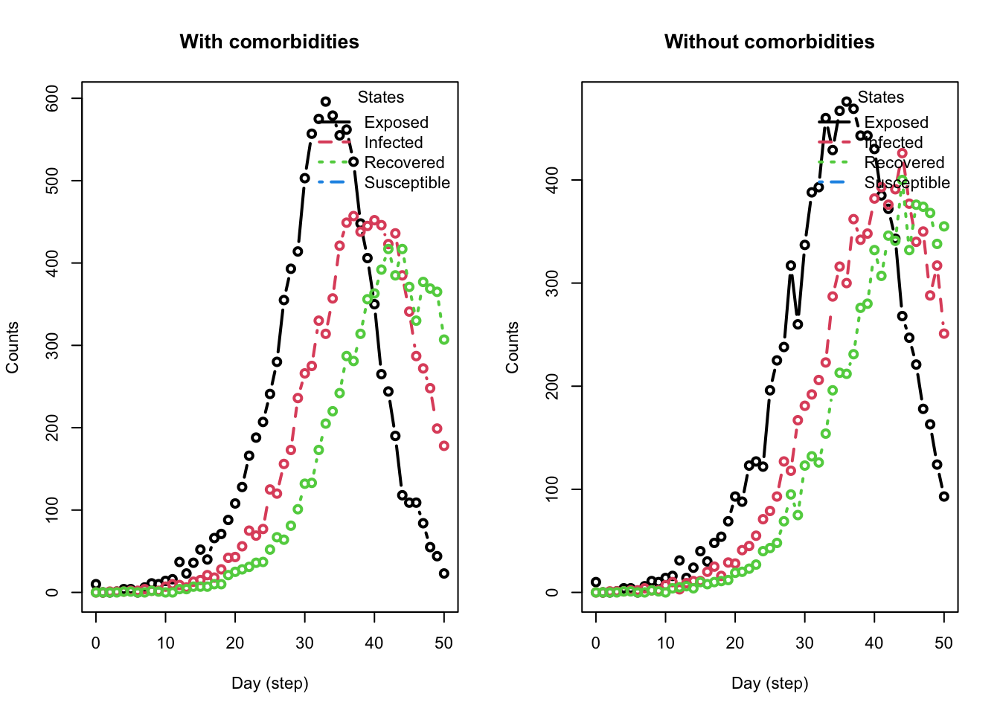

epiworldR supports multi-virus and tools models, the below code gives instructions on how to implement this. First, build a SIRCONN model for COVID-19, which new viruses and tools will then be added to.
_________________________________________________________________________
|Running the model...
|||||||||||||||||||||||||||||||||||||||||||||||||||||||||||||||||||||||| done.
| done.
Code
model_sir
________________________________________________________________________________
Susceptible-Infected-Removed (SIR) (connected)
It features 50000 agents, 1 virus(es), and 0 tool(s).
The model has 3 states.
The final distribution is: 478 Susceptible, 0 Infected, and 49522 Recovered.
Designing a Virus
Using the virus() function, assign a name to the new virus/variant with its corresponding rate of transmission to any given agent. In this example, prob_infecting = 0.35. In order to add this new virus to the model, use the add_virus() function by calling the original epiworldR model object, the new virus, and the new virus’ prevalence (which is set to 0.001 in this example).
Code
# Building the virusflu <-virus(name ="Flu", prob_infecting = .35)# Adding the virus to the modeladd_virus(model_sir, flu, proportion = .001)
Designing a Tool
Provide parameters for the new tool using the tool() function. These parameters include the tool’s name, any reduction in probabilities for the SIRCONN model parameters, and increased probability of recovery option. To add the tool to the SIRCONN model, use the add_tool() function with the SIRCONN model object, new tool, and prevalence of the tool. In this example, assume that 50% of the population will have received the vaccination.
Code
# Building the toolvaccine <-tool(name ="Vaccine",susceptibility_reduction = .9,transmission_reduction = .5,recovery_enhancer = .5, death_reduction = .9)# Adding the tool to the modeladd_tool(model_sir, vaccine, proportion =0.5)
Next, run the updated model for 50 days, the output below describes the simulation. To confirm that the flu and vaccine are included, notice the presence of “Flu” in the Virus(es) section of the output, and “Vaccine” in the Tool(s) section.
Code
run(model_sir, ndays =50, seed =1912)
_________________________________________________________________________
|Running the model...
|||||||||||||||||||||||||||||||||||||||||||||||||||||||||||||||||||||||| done.
| done.
Code
summary(model_sir)
________________________________________________________________________________
________________________________________________________________________________
SIMULATION STUDY
Name of the model : Susceptible-Infected-Removed (SIR) (connected)
Population size : 50000
Agents' data : (none)
Number of entities : 0
Days (duration) : 50 (of 50)
Number of viruses : 2
Last run elapsed t : 1.00s
Total elapsed t : 2.00s (2 runs)
Last run speed : 1.59 million agents x day / second
Average run speed : 2.19 million agents x day / second
Rewiring : off
Global actions:
(none)
Virus(es):
- COVID-19 (baseline prevalence: 0.10%)
- Flu (baseline prevalence: 0.10%)
Tool(s):
- Vaccine (baseline prevalence: 50.00%)
Model parameters:
- Contact rate : 2.5000
- Recovery rate : 0.2500
- Transmission rate : 0.5000
Distribution of the population at time 50:
- (0) Susceptible : 49900 -> 22427
- (1) Infected : 100 -> 46
- (2) Recovered : 0 -> 27527
Transition Probabilities:
- Susceptible 0.98 0.02 0.00
- Infected 0.00 0.71 0.29
- Recovered 0.00 0.00 1.00
Plotting
Plotting the model with the additional virus and tool yields the following. Notice the presence of two reproductive numbers plotted over time. Variant 0 refers to COVID-19 and variant 1 refers to the flu.
Many times we want to model the effects of comorbidities on the disease. For example, we may want to model the effects of obesity on the probability of recovery from COVID-19. To do this, we can use the virus_fun_logit() function to model the probability of recovery.
The steps are the following:
Create the model
Assign the agents’ data (a matrix with covariates/features) to the model.
Create a function to model the probability of recovery using the virus_fun_logit() function.
Add the function to the virus’ recovery rate using set_prob_recovery_fun().
Run the model.
We start by creating two matching models, one with comorbidities and one without.
Next, we will create a matrix with the agents’ data. As an example, we will create a matrix with two columns, one for the baseline and one for obesity.
Code
# Artificial population with obesityX <-readRDS("part2b_comorb.rds")
Let’s now link agents’ data to the model. This will allow us to use the data to model the probability of recovery.
Code
# Adding the data to the modelset_agents_data(model_comor, X)model_comor
________________________________________________________________________________
Susceptible-Exposed-Infected-Removed (SEIR) (connected)
It features 10000 agents, 1 virus(es), and 0 tool(s).
The model has 4 states. The model hasn't been run yet.
We then use virus_fun_logit() to create a function we can use to model the probability of recovery. The function takes in the following arguments:
An epiworld_virus_function object.
(model: Susceptible-Exposed-Infected-Removed (SEIR) (connected))
This function was built using -virus_fun_logit()-. and it features the following coefficients:
0: -1.10
1: -0.85
Note
To build the previous model, we used the following: (a) Under the logit model, the coefficient needed for the baseline probability of 0.25 is computed using qlogis(0.25). With that, we can go further and compute the associated coefficient to obese individuals with plogis(qlogis(.25) + x) = .125 -> qlogis(.25) + x = plogis(.125) -> x = qlogis(.125) - qlogis(.25)
The next step is to set the probability of recovery function for the virus. We can do this using the set_prob_recovery_fun() function:
Code
# Setting the probability of recoveryset_prob_recovery_fun(virus =get_virus(model_comor, 0), model = model_comor,vfun = lfun )
We are now ready to run the model.
Code
run(model_comor, ndays =50, seed =1231)
_________________________________________________________________________
|Running the model...
|||||||||||||||||||||||||||||||||||||||||||||||||||||||||||||||||||||||| done.
| done.
Code
run(model_no_comor, ndays =50, seed =1231)
_________________________________________________________________________
|Running the model...
|||||||||||||||||||||||||||||||||||||||||||||||||||||||||||||||||||||||| done.
| done.
And see the result
Code
op <-par(mfrow =c(1, 2), cex = .7)plot_incidence(model_comor, main ="With comorbidities")plot_incidence(model_no_comor, main ="Without comorbidities")

Code
par(op)
Tip
We can get information about agents’ final state using the function get_agents_state().
Exercise
Using a SIRCONN model to simulate the Flu for 75 days, add the Coronavirus Delta variant and a masking tool to the model. Then plot the model parameters and reproductive numbers over time.
Assume the following for model initialization:
- n = 10000
- prevalence = 0.001
- contact_rate = 2.1
- transmission_rate = 0.5
- recovery_rate = \(\frac{1}{4}\)
Assume the Delta variant has:
- prob_infecting = 0.3
- recovery_rate = \(\frac{1}{4}\)
- prevalence = 0.001
- When running the model, use seed = 1912
Assume the masking tool has:
- transmission_reduction = 0.3
- proportion of complying agents = 0.6 (for adding the tool to the model)
After how many days does the number of infections peak in this simulation? How many infections occur at the peak?
Tip
Masking only influences the transmission of a disease, thus transmission reduction = 0.3, and all other parameters of this tool will be 0.0.